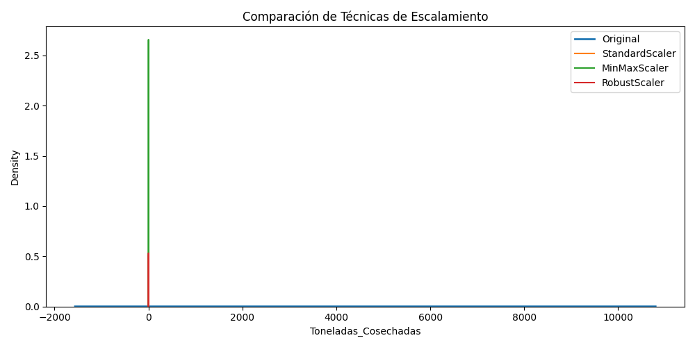
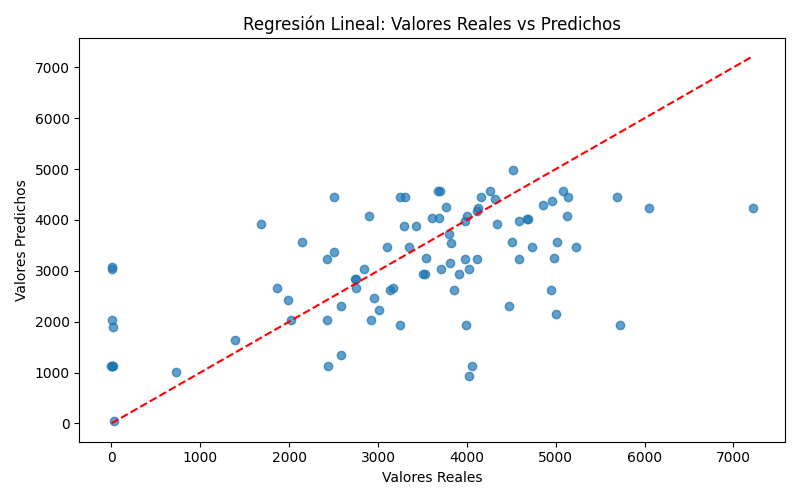

🌾 Dashboard: Cosechas 2023
📋 Muestra del Dataset
|
Empresa |
Especie |
Toneladas_Cosechadas |
| 0 |
SALMONES AYSEN S.A. |
SALMON COHO |
3172.132 |
| 1 |
SALMONES AYSEN S.A. |
SALMON COHO |
2551.875 |
| 2 |
TORNAGALEONES S.A., GRANJA MARINA |
SALMON COHO |
3958.815 |
| 3 |
CALETA BAY MAR SpA |
SALMON COHO |
4101.942 |
| 4 |
CALETA BAY MAR SpA |
TRUCHA ARCOIRIS |
2849.434 |
| 5 |
SALMONES AYSEN S.A. |
SALMON COHO |
3098.251 |
| 6 |
SAYSEN I SPA |
SALMON COHO |
1972.344 |
| 7 |
MOWI CHILE S.A. |
SALMON DEL ATLANTICO |
6242.285 |
| 8 |
SALMONES CAMANCHACA S.A. |
SALMON COHO |
3390.778 |
| 9 |
SALMONES AYSEN S.A. |
SALMON COHO |
1860.840 |
📈 Comparación de Escalamiento

📊 Estadísticas por Técnica
|
Media |
Desviación estándar |
| Toneladas_Cosechadas |
3319.277 |
1773.194 |
| Cosecha_StandardScaler |
0.000 |
1.001 |
| Cosecha_MinMaxScaler |
0.360 |
0.192 |
| Cosecha_RobustScaler |
-0.095 |
0.961 |
| Cosecha_log |
7.391 |
2.137 |
| Cosecha_sqrt |
53.349 |
21.777 |
| Cosecha_normalized |
1.000 |
0.000 |
📌 Interpretación Automática
- Toneladas_Cosechadas: media=3319.3, STD=1773.2. Requiere escalamiento.
- Cosecha_StandardScaler: centrado en 0, desviación ≈1. Ideal para regresión.
- Cosecha_MinMaxScaler: escala [0-1]. Útil para redes neuronales.
- Cosecha_RobustScaler: robusto a outliers. Desviación ≈ 0.96.
- Cosecha_log: reduce sesgo positivo y valores grandes.
- Cosecha_sqrt: suaviza la distribución.
- Cosecha_normalized: vector normalizado. Útil para distancias.
🔢 Regresión Lineal
R² Score: 0.292
Error Cuadrático Medio (MSE): 1675051.83

✅ Conclusión
Se aplicó un flujo de procesamiento y predicción sobre la variable Toneladas Cosechadas.
El modelo de regresión ofrece una aproximación inicial al comportamiento de las cosechas.